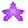

Ставится ли: нет
Прикольная Звезда (английский: Cool Star) - это материал создания из раннего этапа игры.
Создание

Заметки
Это первый предмет, добавленный в игру
Ставится ли: нет
Прикольная Звезда (английский: Cool Star) - это материал создания из раннего этапа игры.
Это первый предмет, добавленный в игру